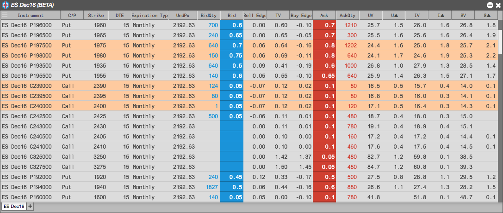

TT’s Electronic Eye displays market data for all puts and calls of an options expiry and can be configured to find trading opportunities based on your criteria. You can apply filters based on price, quantity, volatility, theoretical value, Greeks and more. Once filters are applied, the electronic eye only displays instruments that meet the criteria. You can then quickly trade any contract that is displayed.

You can open an Electronic Eye from the Widgets menu.